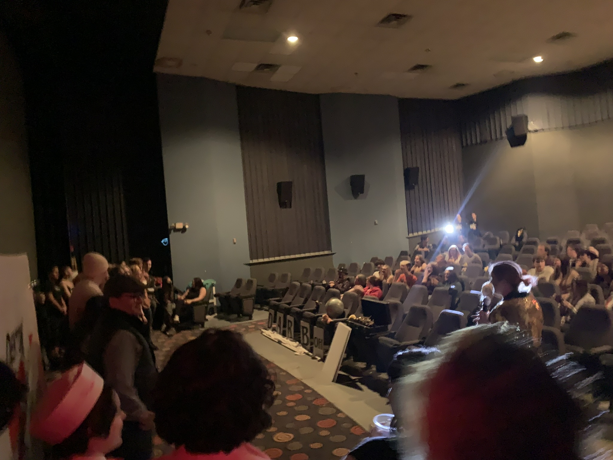

Fall 2022
English Composition and Literature Honors
I wanted to take English Literature and Composiiton Honors to challenge myself and because I wanted a more interative and memorable experinece for one of the few arts class in my curriculum as a Computer Science Major.
Since the beginning of the semester I’ve grown in my distinction and comparability as a writer through writing, reading, and analyzing academic and non-academic articles. At the beginning of the semester I learned about literacy outside of the context of just reading while writing my literacy narrative analysis. The next essay was a comparative genre analysis essay. This essay helped me improve my skills in formally writing a research paper rather than my own personal experiences. Then finally I got to write an ethnography of a discourse community where I immersed myself in a community to understand aspects of the group. All of these experiences helped me progress as a reader and writer, further developing skills that I will use later in my life.
Before writing the literacy narrative analysis essay I learned a lot about what it meant to be literate in something. Before taking this class I thought literacy meant being able to read, but to be literate in something is something that expands far broader than I expected. One could be literate in driving, telling jokes, video games, or in my case producing. From this I learned literacy is seen more as a skill to be learned rather than the understanding of a language. When starting to write the essay I first messed up a lot by writing in third person then switching to first person. After making several drafts of my work and having it reviewed by classmates and my professor alike I learned, and improved my writing skills and comprehension of the assignment. Learning this skill of reviewing my work by making drafts and peer review is imperative to succeeding in my classes further down the line. In my classes in the coming years I will have to write a multitude of markdown read-me documents that explain what project I created.
The comparative genre analysis essay was a big switch from the literacy narrative analysis essay I did prior. This essay required me to analyze academic articles outside of class and compare them to non-academic articles. Being able to deeply analyze academic articles in the context of genre is a skill that I was able to further develop during this assignment, and will be useful in my future academic career. Despite being a STEM major, we still have to do research and cite academic articles in research papers. When I eventually go to graduate school this skill will be paramount to my success in research and credibility, or when working on my senior project it is going to be important to recognize work that has already been done. I learned from this assignment that when mounting credibility for a project it’s important to consider the genre for its authenticity. This essay was also a big shift from the last one in the perspective it was written in. The shift from first to third person made the writing process more formal, and caused me to change my diction. Because this essay prohibited me from writing in first person, I couldn’t start my essay with a hook as I did in the previous essay, “My soles slowly slapped harder than usual in war-torn black-brown vans at 7 in the morning as I stumbled into my academic daycare with booming airpods.” Instead I started my essay with an analytical tone as I stated , “Parodies seem to have a tendency to have a competing interpretation of the thing they parodies.” Overall the change in perspective helped me write in a more professional, objective, and analytical manner, all writing skills traits that I’m going to need in my future in STEM.
Lastly, the ethnography of a discourse community was an amazing research experience and helped me improve as a critical thinker. This essay combined elements of the first and second essay I wrote while also adding a new component. While analyzing academic articles based off of the research I did for ethnography, gathering data and relating them to the academic articles was an experience that made what I was analyzing mean something. Whereas when I was analyzing academic articles in the comparative genre analysis the concepts I was relating it to wasn’t something that I was able to witness in person, the ethnography enabled me to relate the academic concepts on discourse communities to an activity I did regularly. Analyzing academic articles in this sense is important to my future research because it relates to the manner in which I will have to analyze research papers as a computer science student. As a computer science student I will have to analyze research papers and relate them to work I do on a day to day basis.
I took this picture during my ethnography in The Denton Affair!

I’m glad I was able to take this course in person because it provided me with a more personal experience, and it made doing the work more efficient. I often find it hard to get motivation to do work when in remote classes, but being in person talking about the subject at hand made me genuinely interested during class. Being able to get real time responses from my teacher and interacting with other students was a huge benefit to being in person as well. The lessons in class were much more impactful than they ever could’ve been in a remote setting because of the ease of use in technology, and the real time responses. When discussing assigned academic articles we were supposed to read, being in person made the process of interacting with the class seamless. Whereas in a remote environment there could be technical issues, or awkward delay in responses due to internet connection. Being able to see everyone in person pay attention or get distracted the same way I do sometimes made the learning experience more enjoyable and relieved the feeling of isolation remote learning often gives.
Through my co-op experiences, I learned that a lot of computer science is reading code and documenting code. From my experience, approximately 60% is reading and reviewing code, 30% is design, and 10% is actual code development. During my second co-op I had the opportunity to work on a patent for a new design, after I came up with the idea I had to do extensive research on other patents similar to it. The process of looking into other patents took about a week, a lot longer than I thought it would take. Because it took me so long to look at similar work I wasn’t able to file my patent during my rotation. With the skills of reading through academic articles I’ve gained from this class I’m confident that in the same scenario today I would be able to look through other patents in one day, if that were the case back then I might've had a patent to my name. My experience in English 2089 directly connects to my work in co-op and my academic work in college, overall I’ve developed skills that will improve my efficiency as a programmer.